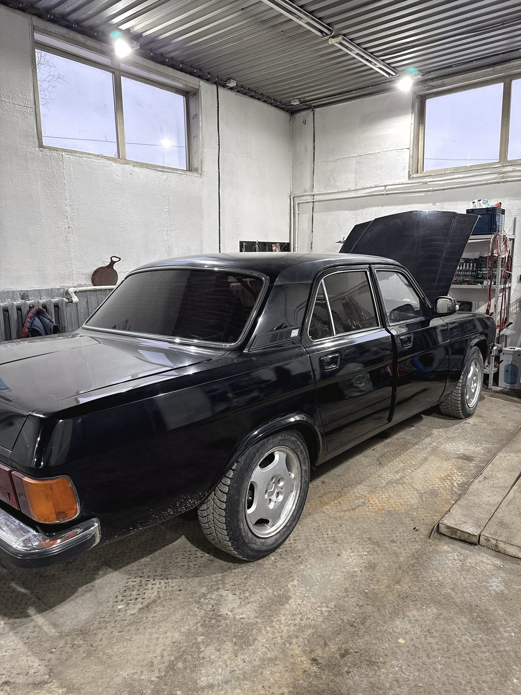
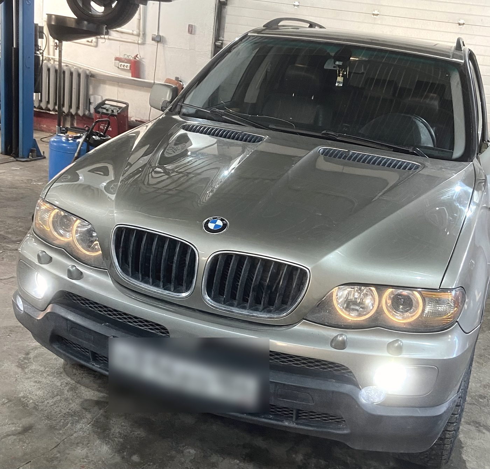
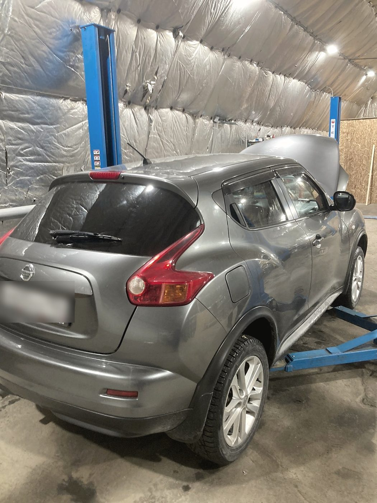
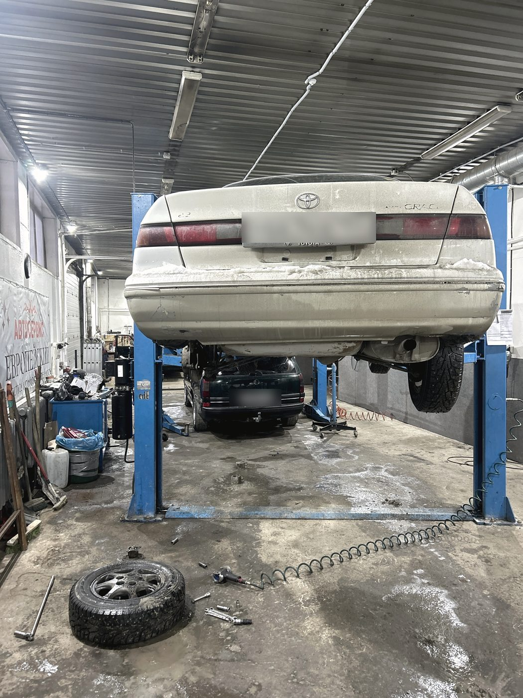
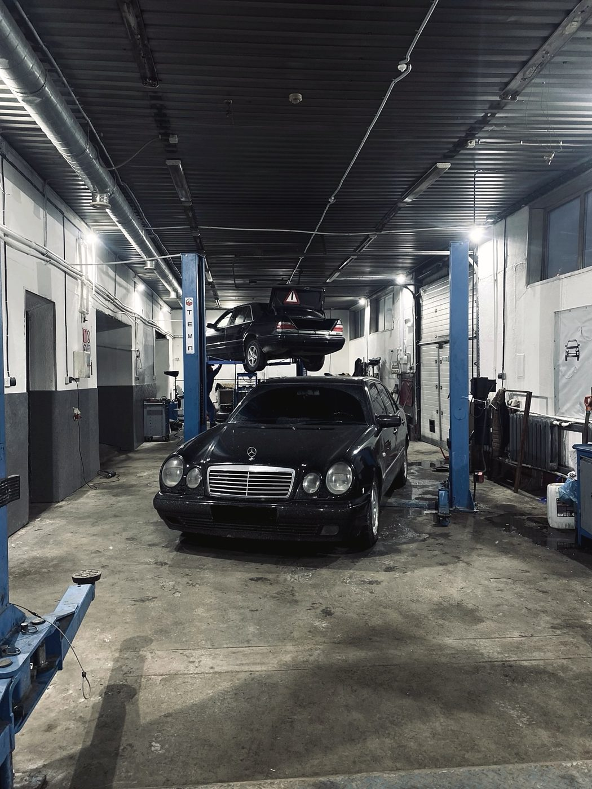
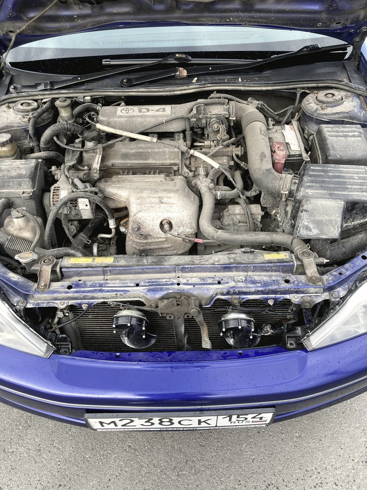
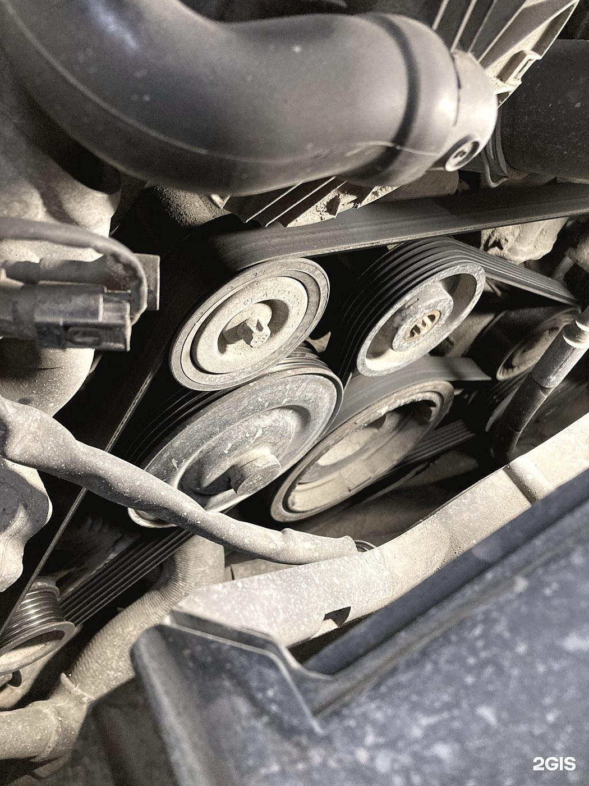

Кузов и покраска
Правка геометрии, сварочные работы, покраска и полировка. Берёмся и за то, что нужно вырезать и вварить заново, а не только за подкраску крыла.
- Покраска
- Полировка
- Сварка
- Автооптика
Автосервис · Большая улица, 252 к2 · Ленинский район
Кузов с покраской и сваркой, моторный цех с расточкой и гильзовкой, ходовая и пневмоподвеска, рулевые рейки, электрика, климат. Плюс то, за что берутся немногие: мотоциклы, гибриды и газовое оборудование. Ежедневно, без выходных, с 9 до 20.

Что в боксах
Это не наш слоган — так написал о нас клиент в 2ГИС, и мы не смогли сформулировать точнее. За один день через подъёмники проходят немецкий внедорожник, японский кроссовер, «Волга» и мотоцикл. Мы не отказываем по марке, году и «у нас таких не бывает».




Отзыв, который стал заголовком
«Марка машины значения не имеет — в отличие от других СТО»
Александр Григорьев · отзыв в 2ГИС · 24 мая 2026
Что делаем
Машину не приходится возить по городу между «кузовщиками», «моторщиками» и «электриками». Всё, что нужно, делается на одной площадке — и отвечает за результат один сервис.
Правка геометрии, сварочные работы, покраска и полировка. Берёмся и за то, что нужно вырезать и вварить заново, а не только за подкраску крыла.
Бензин и дизель, от замены масла до серьёзного капитального ремонта. Станочные операции делаем у себя, а не отдаём на сторону.
Стойки, рычаги, сайлентблоки, подшипники. Отдельно — ремонт рулевых реек и пневмоподвески, которую в городе чинят далеко не везде.
Компьютерная диагностика, поиск обрывов и замыканий, ремонт электронных блоков, обслуживание и заправка кондиционера.


Сверх обычного сервиса
Ремонт и тюнинг мотоциклов. Если ехать нельзя — приедет мотоэвакуатор, он у нас свой, отдельный от легкового.
Гибридные силовые установки: диагностика, обслуживание, ремонт. Не отправляем «к официалам» по факту наличия батареи.
ГБО: установка, настройка, обслуживание, устранение проблем после чужой установки.
Ремонт и переварка выхлопной системы, тюнинг выпуска. Сварка своя, поэтому не зависим от чужого графика.
Слабое место, которое мы признаём
В отзывах нас хвалят за ремонт и ругают за одно и то же: «обещали перезвонить и не перезвонили». Мы это признавали и раньше — прямо в ответах на отзывы. Спорить смысла нет, поэтому вместо оправданий здесь три правила, по которым мы работаем с теми, кто оставил у нас машину.
Отзывы · 4,7 из 5 по 88 оценкам в 2ГИС
Плавали обороты на холостых. Записали день в день, промыли форсы, почистили дроссель, поменяли свечи, давление топливной системы проверили. Проблема исчезла, сработали оперативно.
Андрей · 12 мая 2026
Заезжал на «Кашкае». Ребята профессионалы — рекомендую, в случае чего смело езжайте к ним, не пожалеете. В целом сервис как сервис, но главное — кто в нём работает, верно? Вот ради этого и стоит проехать лишний десяток км.
Отзыв в 2ГИС · 24 июля 2026
Заезжал на «Мазде 3». Проблема была по электрике. Быстро нашли причину и устранили проблему!
Ольга К. · 14 мая 2026
Отличный сервис, качественный ремонт. Всё по-честному по неисправностям.
Вячеслав Сергеевич · 15 августа 2026
Контакты